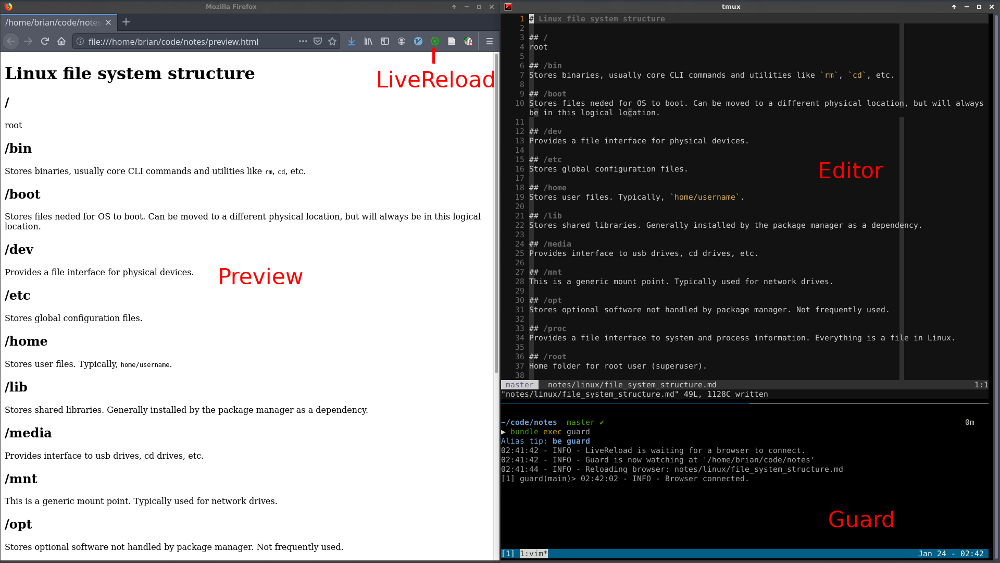

I've struggled to find a notetaking app I like. Most have poor keyboard support, use a propietary format to store data and force a context switch away from my normal vim/tmux workflow.
Using Guard and vim's autocmds this lets me tuck my notes into a tmux window next to my code, dispays live HTML previews, uses familiar keybindings for editing, is searchable with fzf and is stored in vanilla markdown files.

$ bundle install.vimrc:function! PreviewMarkdown()
if filereadable('preview.html')
!pandoc %:p -f markdown_github -t html -s -o preview.html
endif
endfunction
autocmd BufWritePost *.md silent call PreviewMarkdown()Start watching for file changes by running:
$ bundle exec guardOpen the preview.html in the browser.
Activate the livereload plugin.
Use vim to add, edit and navigate the markdown files in this project.
Each time a markdown file is saved it is rendered as HTML and replaces the contents of preveiw.html which causes livereload to refresh the page.